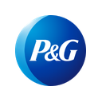

PGNYSE · The Procter & Gamble Company
Fair value (blend propio)
$148.32
vs. $168.03 mercado · −11.7%
POSTURA DEL ANÁLISIS: NEUTRAL, CON SESGO BAJISTA (antes: neutral, con sesgo cauteloso) — el volumen volvió en el 1T FY2027, pero la acción subió 14.9% desde la edición de septiembre y el fair value apenas $4.56. Los métodos que no usan el precio de P&G (flujo de caja descontado y comparables) promedian $127.33, y a diferencia de septiembre también los anclados al mercado (su múltiplo histórico y el consenso) quedan debajo del precio: $162.31 (ver Sección 13)
Este documento es análisis independiente con fines informativos y educativos. El autor no es un asesor financiero registrado (no CFA / no matriculado ante la CNV/SEC) y este contenido no constituye una recomendación de compra, venta o mantenimiento para ningún lector en particular. Ver disclosure completo al pie.
Consumo masivo · Cuidado personal y del hogar (HPC) · Actualización del 1T del año fiscal 2027 (primera edición: 28 de septiembre de 2026) · Año fiscal de julio a junio: el 1T FY2027 es el trimestre de julio a septiembre de 2026
En septiembre la pregunta era si el volumen de Procter & Gamble iba a volver. En el primer trimestre del año fiscal
2027 (julio a septiembre de 2026) volvió: las ventas orgánicas crecieron 4.0%, con 2.4 puntos de volumen, 1.1 de
mezcla y apenas 0.4 de precio, y los diez rubros y las seis regiones crecieron. Con ese trimestre, el volumen de los
últimos ocho trimestres promedia 0.68 puntos (antes 0.50). El EPS core fue de $2.00 (+1%), pero la
guía del año no cambió, porque el costo de materias primas, intereses y monedas pasó de restar $0.56 por acción a
restar $0.79. La acción subió de $146.23 a $168.03 (+14.9%) y cotiza a
23.7x las ganancias de los próximos doce meses, por encima de su promedio de diez años
(22.5x). Con más volumen, el flujo de caja descontado sube apenas a $111.45, porque el margen
de caja del año se ancla en una guía con más costos; los comparables contra siete pares de cuidado personal, hogar y
bebidas dan $136.86. Su propio múltiplo histórico ($153.92) quedó debajo del precio, y solo el consenso
($174.04) lo supera. El blend ponderado da $148.32, −11.7%: el trimestre mejoró la tesis, pero el
precio se adelantó más que el valor.
Orgánico 1T (volumen)
+4.0% (+2.4%)
P/E forward (12 meses)
23.7x
01 — Resumen Ejecutivo
El volumen de P&G volvió, pero el precio de la acción subió más que su valor
Procter & Gamble reportó el 22 de octubre de 2026 su primer trimestre del año fiscal 2027 (julio a septiembre):
ventas de $23,276 millones (+4.0%), orgánico de +4.0% sin efecto de monedas, EPS diluido de $1.97 (+1%) y EPS core de
$2.00 (+1%). La composición es la novedad: 2.4 puntos de volumen, 1.1 de mezcla y 0.4 de precio. Es el volumen más alto
de los nueve trimestres de la tabla de la Sección 05, con crecimiento en los diez rubros y en las seis regiones, y llega
después de un año fiscal 2026 en que el volumen había quedado en cero. El margen bruto, en cambio, cayó 160 puntos
básicos, sobre todo por materias primas más caras y reinversión en producto, y el margen operativo core bajó 80.
La guía del año fiscal 2027 se mantuvo (orgánico de 1%-3% y EPS core de $6.89-7.11), pero con otro contenido: el viento
en contra de materias primas, intereses, resultado no operativo y monedas subió de $1,350 millones a $1,900 millones
después de impuestos, $0.79 por acción (11 puntos de crecimiento del EPS) contra $0.56 en julio. La compañía absorbe
esa diferencia con el arranque mejor de lo esperado y con productividad, y espera un orgánico de alrededor de 3% en el
primer semestre. La compra de Thorne (vitaminas y suplementos) cerró el 1 de octubre por $3,900 millones y suma un
punto a la guía de ventas totales (ahora 2%-4%).
La valuación usa los mismos cuatro métodos y pesos que en septiembre. El flujo de caja descontado da
$111.45 ($110.77 en septiembre): el volumen más alto suma, pero el margen de caja del Base
baja a 22.2% al anclarse en el año real y la guía del año en curso. Los comparables contra siete pares
(Coca-Cola, PepsiCo, Colgate, Kimberly-Clark, Church & Dwight, Clorox y Unilever), sin usar el precio de P&G, dan
$136.86; la reversión a su P/E propio y relativo al S&P 500, $153.92; y el consenso de 25 analistas,
$174.04. El blend ponderado es de $148.32, −11.7% contra $168.03.
Contra septiembre, el blend subió $4.56: $4.71 por los datos nuevos y los cambios de
método, y −$0.16 por el precio (que solo entra por los pesos del costo de capital). La acción subió
14.9%, así que la brecha pasó de −1.7% a −11.7%. La postura pasa de neutral
con sesgo cauteloso a neutral con sesgo bajista. El negocio mejoró: más volumen, conversión de caja de
93% en el trimestre, balance AA-, 70 años de aumentos del dividendo. Pero el precio ya paga 28% más que la mediana de
sus pares, y P&G cotiza por encima de su promedio de diez años con un volumen que recién lleva un trimestre bueno.
02 — Historia y Evolución
De una fábrica de velas y jabón en Cincinnati a una cartera enfocada de 10 categorías
William Procter, fabricante de velas, y James Gamble, fabricante de jabón, fundaron la compañía en Cincinnati en 1837;
se constituyó como sociedad en 1890 y paga dividendos desde entonces (136 años seguidos, según el 10-K). Durante el
siglo XX construyó las marcas que todavía definen su cartera: el jabón Ivory, el detergente Tide (1946), los pañales
Pampers (1961), el dentífrico Crest. La compra de Gillette en 2005 sumó afeitadoras (Gillette, Venus), pequeños
electrodomésticos (Braun) y cepillos eléctricos (Oral-B).
Entre 2014 y 2017 P&G hizo la reestructuración de cartera más grande de su historia: pasó de unas 170 marcas a unas
65, con la venta de alimento para mascotas (Iams) a Mars, de Duracell a Berkshire Hathaway y de 43 marcas de
belleza a Coty. En 2018 compró el negocio de consumo de Merck KGaA (de ahí Neurobion). En 2023-2024 salió de mercados
donde no podía operar con rentabilidad: liquidó en lo sustancial sus operaciones en Argentina (completado en septiembre
de 2024, con un cargo no recurrente de $801 millones después de impuestos por diferencias de conversión acumuladas) y
reestructuró Nigeria. El 1 de octubre de 2026 cerró la compra de Thorne, la mayor desde la de Merck KGaA. La P&G que
se valúa acá es una compañía de 10 categorías y cinco segmentos, con ventas que crecieron a una tasa compuesta de 3.7%
anual entre el FY2019 y el FY2026.
Ventas netas anuales, años fiscales cerrados el 30 de junio, en miles de millones de US$, FY2019-FY2026. Fuente: SEC EDGAR XBRL (10-K).
03 — Modelo de Negocio, Marcas y Geografía
Productos de uso diario, marcas líderes y un cliente que compra una de cada seis unidades
P&G vende productos de uso diario en cinco segmentos. Tela y hogar (Fabric & Home Care; Tide, Ariel,
Downy, Gain, Dawn, Cascade, Febreze, Swiffer) es el más grande: 35% de las ventas y 35% de la utilidad neta de los
segmentos en el FY2026. Bebés, femenino y familia (Pampers, Always, Tampax, Bounty, Charmin) aporta 24% de
ambos. Belleza (Head & Shoulders, Pantene, Olay, SK-II, Old Spice, Secret) aporta 19% de las ventas y 17% de
la utilidad; Salud (Crest, Oral-B, Vicks, Metamucil, Pepto-Bismol, Neurobion y, desde octubre de 2026,
Thorne), 14% y 15%; y Cuidado personal y aseo (Grooming; Gillette, Venus, Braun), 8% y 9%.
Ventas netas por segmento, FY2026, en miles de millones de US$. Fuente: comunicado del 4T FY2026 y 10-K. Además hay $0.9 mil millones de ventas registradas en Corporate.
Geografía. Estados Unidos explicó $41.7 mil millones de ventas en el FY2026 (47.9%) y el resto del
mundo, $45.3 mil millones. Los cinco mayores mercados fuera de EE.UU. (Gran China, Reino Unido, Canadá, Japón y
Alemania) suman 21% de las ventas; Rusia, 1%. La compañía separa "mercados foco" (Norteamérica, Europa, Gran China,
Japón, Australia) de "mercados empresa" (América Latina, India, Medio Oriente, Turquía, África y el resto de Asia): en
el 1T FY2027 los primeros crecieron 4% orgánico y los segundos 5% (en el FY2026: 1% y 4%).
Canales y clientes. Walmart y sus filiales explicaron cerca de 16% de las ventas en el FY2026 (igual que
en los dos años previos), y los diez mayores clientes, 43%. La compañía vende en supermercados, hipermercados, clubes
de compra, farmacias, comercio electrónico (incluido comercio social) y canales profesionales. Esa concentración es
la base del riesgo de "poder del minorista" de la Sección 10: el minorista decide cuánto inventario mantiene, y en el
4T FY2026 la reducción de inventarios le costó a P&G unos tres puntos de crecimiento.
04 — Desarrollos Recientes y Perspectiva
Un trimestre por volumen, la misma guía con más costos, Thorne cerrada y un Investor Day el 19 de noviembre
El trimestre. El orgánico de +4.0% superó el rango de la guía anual (1%-3%). La compañía lo explica con
mejor ejecución: más de 70% de sus principales clientes de EE.UU. con participación estable o en alza, 29 de sus 50
principales combinaciones de categoría y país con participación estable o en alza (25 en el segundo semestre del FY2026)
y una participación global agregada sin cambios contra un año antes. Parte del crecimiento es de base: el 1T FY2026 tuvo
orgánico de +2% y volumen nulo. La gerencia aclaró que la trayectoria trimestral "no será una línea recta" y que espera
un orgánico de alrededor de 3% en el primer semestre, con una leve aceleración en el segundo.
La conducción. Shailesh Jejurikar, CEO desde el 1 de enero de 2026 y presidente del directorio desde el 1
de agosto, atribuyó el resultado a una "ejecución más afilada" de la estrategia integrada y dijo que el trimestre deja a
la compañía en camino de cumplir los rangos de la guía. La conducción no anunció salidas de mercados nuevas en el
trimestre: las discontinuaciones de marcas, formatos y canales ya incluidas en el plan de 2025 restan 30-50 puntos
básicos al orgánico del año, y el 10-Q las identifica en India, Medio Oriente y África (belleza, aseo y femenino), en
América Latina y en Gran China (cuidado bucal). La compañía presentará su visión de largo plazo en un Investor Day el
19 de noviembre de 2026, una semana después de la fecha de corte de este informe.
Reestructuración. El plan de dos años anunciado en junio de 2025 recorta hasta 7,000 puestos no fabriles
(cerca de 15% de esa plantilla, según la gerencia) y prevé cargos de unos $2,000 millones antes de impuestos. P&G
registró $1,200 millones en el FY2026 y $192 millones en el 1T FY2027 ($106 millones en costo de ventas, $82 en gastos y
$4 en otros resultados); el resto se espera en lo que queda del FY2027. Como el nivel "habitual" de reestructuración
($250-500 millones por año) queda dentro del resultado core, el EPS core solo excluye el excedente: $0.03 por acción en
el trimestre; para el año, la guía estima que los cargos no core restan entre 1 y 2 puntos al crecimiento del EPS diluido
(+1% a +5%, contra 0% a +3% del EPS core). La
compañía no publica el ahorro del plan por separado: informa productividad total, que en el trimestre sumó 120 puntos
básicos al margen bruto, 130 a los gastos y 250 al margen operativo core.
Costos y aranceles. El viento en contra de materias primas subió de $1,000 millones a $1,400 millones
después de impuestos, con un supuesto de Brent cerca de $100 por barril según la conferencia, y la gerencia anticipó
costos "materialmente más altos" en el 2T y el segundo semestre. Los intereses netos restarán $300 millones (antes
$150 millones), por la deuda tomada para Thorne y tasas más altas. Del lado de los aranceles, el trimestre registró unos
$90 millones de la segunda parte del reintegro de los aranceles IEEPA invalidados por la Corte Suprema en febrero de
2026: sumó 50 puntos básicos al margen bruto y no se repite. Para trasladar costos, la conducción dijo que subirá
precios "con innovación", en los cambios de góndola, sin precisar montos.
Thorne y deuda. P&G completó la compra de Thorne el 1 de octubre de 2026 por $3,900 millones en
efectivo (había anunciado $3,800 millones), 4.5% de las ventas del FY2026; sus resultados entran desde el
2T y la compañía los considera no materiales. La caja del 30 de septiembre ($15,365 millones) todavía incluía los
fondos para pagarla. Después del cierre del trimestre la compañía emitió bonos por $4.35 mil millones en
dólares (de 2031 a 2076) y €3,250 millones en euros (de 2030 a 2046), en buena parte para reemplazar papel comercial
de corto plazo.
China y SK-II. Gran China creció 8% orgánico, con Pampers cerca de +50% y SK-II +12%, pero la compañía
atribuye unos 3 puntos a una dinámica competitiva que no considera duradera. La participación global en cuidado de la
piel cayó 0.6 puntos por competencia en Gran China, y cuidado bucal cayó en China por discontinuaciones del plan.
05 — Estados Financieros: Orgánico, Márgenes y Reinversión
El primer trimestre con volumen de más de dos puntos en la serie, con el precio casi en cero
Crecimiento orgánico trimestral descompuesto en volumen orgánico, precio y mezcla, en puntos porcentuales, 2T FY2025 (oct-dic 2024) a 1T FY2027 (jul-sep 2026). El rombo marca el orgánico total. Fuente: comunicados de resultados de P&G (tabla "Net Sales Drivers").
Tres lecturas. Primero, el volumen tomó la posta que había dejado el precio: +2.4 puntos en el trimestre, después de
un FY2026 en cero, con el promedio de ocho trimestres en 0.68 puntos. Segundo, el precio casi no aportó (+0.4),
y eso es una decisión: en bebés y en papel la compañía bajó precios o invirtió en promociones para recuperar volumen,
mientras que en aseo y salud subió precios con productos nuevos. Tercero, la mezcla (+1.1) vino de productos premium
(SK-II, cepillos eléctricos, pañales de gama alta) y de regiones; con márgenes, en cambio, la mezcla de productos restó 50
puntos básicos. Un trimestre no es una tendencia: la comparación es contra un 1T FY2026 con volumen nulo, y la
compañía espera un semestre de alrededor de 3%.
Crecimiento orgánico anual, FY2019-FY2026, en %. Fuente: presentación de resultados del 4T FY2026 de P&G.
Por segmento: todos crecen; Tela y hogar por volumen, Salud y aseo por precio
1T FY2027 por segmento: volumen, precio y mezcla, en puntos porcentuales (valores exactos en la tabla de arriba).
Tela y hogar, un tercio de la utilidad, creció casi solo por volumen (+4.3), con cuidado de la ropa en Norteamérica,
Europa y América Latina, y ganó 0.4 puntos de participación global. Bebés, femenino y familia volvió a crecer (+3.0)
después de un FY2026 negativo, pero con precio de −1.2: es el segmento donde P&G compra volumen con promociones, y su
utilidad cayó 4% con 220 puntos básicos menos de margen bruto. Salud es el espejo: perdió 2.9 puntos de volumen (gripe
más leve en Norteamérica y América Latina, discontinuaciones en China) y lo compensó con precio y mezcla, con la
utilidad en +9%. Belleza creció por volumen y mezcla, pero su utilidad bajó 1% por más marketing y materias primas.
Participación de mercado y marcas propias
P&G reporta sus datos de participación sin citar la fuente de scanner, y a la fecha de corte no hay una cita pública
de Circana o NielsenIQ específica de sus categorías para el trimestre; este informe usa lo que publica la compañía. La
participación global agregada quedó sin cambios contra un año antes, con 29 de sus 50 principales combinaciones de
categoría y país estables o en alza. En el lado de la competencia de marcas propias de los supermercados, Circana estima
que en 2025 alcanzaron ventas de $330,000 millones en EE.UU., con 24% de participación en unidades y 23% en valor del
consumo masivo total. En P&G el efecto se ve donde la diferenciación es menor: papel (Family Care perdió 0.5 puntos
de participación en Norteamérica, con precio negativo por promociones) y pañales en EE.UU., donde la compañía bajó
precios para recuperar volumen.
Margen bruto y productividad
Puente del margen bruto GAAP del 1T FY2027 contra el 1T FY2026, en puntos básicos (−160 pb en total). Azul: suman; rojo: restan. Fuente: 10-Q del 1T FY2027, MD&A.
El margen bruto muestra el dilema del año. La productividad de fabricación sumó 120 puntos básicos y el reintegro de
aranceles 50, pero las materias primas restaron 140 y la reinversión en producto y envases otros 140: P&G gasta en
mejorar el producto antes de subir el precio. En gastos, la productividad aportó 130 puntos básicos y la escala de
ventas 100, contra 120 de reinversión. El gasto en marketing subió en dólares pero bajó 20 puntos básicos como
porcentaje de las ventas, por el mayor volumen. No es un margen sostenido con recortes de publicidad, que el marco de
consumo masivo marca como de baja calidad, pero tampoco hay espacio: con costos "materialmente más altos" en el resto del
año y precio casi en cero, la guía depende de que la productividad siga compensando.
Margen bruto GAAP, margen operativo GAAP y publicidad sobre ventas, FY2020-FY2026, en %. El FY2019 se omite porque incluye una desvalorización de $8,345 millones de la marca Gillette que lleva el margen operativo a 8.1%. Fuente: SEC EDGAR XBRL, cálculo propio.
06 — Balance y Deuda
Un balance AA- con deuda neta de una vez el EBITDA, antes de pagar Thorne
La deuda financiera neta de 23.56 mil millones equivale a 0.99 veces el EBITDA core de los últimos
doce meses (23.77 mil millones), por debajo del rango de 2-3 veces típico de un staple con grado de inversión.
Al 30 de septiembre la caja todavía incluía el dinero para Thorne, pagada el 1 de octubre: con ese pago la deuda neta
sube a cerca de 1.16 veces el EBITDA. Las calificaciones son AA- (S&P) y Aa3 (Moody's) de largo plazo,
según el 10-K, y la compañía refinanció papel comercial con bonos de 2030 a 2076 después del trimestre (Sección 04). Los
intereses netos más altos ya están en la guía ($300 millones después de impuestos).
Dos puntos del balance. Goodwill, marcas e intangibles suman 47.0% de los activos (Thorne sumará otra marca y
goodwill en el 2T), sobre todo por Gillette: la marca ya se desvalorizó dos veces ($8,345 millones en el FY2019 y $1,300
millones en el FY2024). Y el capital de trabajo es negativo: las cuentas a pagar ($17,056 millones) duplican los
inventarios. En el trimestre sumaron $1,149 millones al flujo operativo; por eso el DCF no ancla el margen de caja en el
trimestre (Sección 13).
07 — Flujo de Caja, Dividendo y Asignación de Capital
Setenta años de aumentos del dividendo y una conversión de caja de 93% en el trimestre
Flujo operativo, capex y flujo de caja libre, FY2022-FY2026, en miles de millones de US$. Fuente: SEC EDGAR XBRL.
El FCF del trimestre fue de $4,401 millones, 93% de la utilidad neta, por encima de la guía del año
(85%-90%), con ayuda de $1,149 millones de cuentas a pagar. El capex subió a 5.9% de las ventas, dentro de
la guía de 4.5%-5.5%. La compañía devolvió $3,853 millones (dividendos y recompras), 26% de los
$15,000 millones que guía para el año.
El dividendo es el primer destino de la caja. En abril de 2026 P&G lo aumentó 3%, a $1.0885 por trimestre
($4.35 anual, 2.59% de rendimiento al precio de corte; el 13 de octubre lo volvió a declarar por el mismo
monto): fue el aumento número 70 consecutivo, y la compañía paga dividendo desde hace 136 años. En diez años el dividendo
creció a una tasa compuesta de 5% anual. El pago equivale a 61% del EPS de consenso de los
próximos doce meses. En el trimestre recompró 11.5 millones de acciones a un precio promedio de $146.47, y las acciones
diluidas bajaron 1.2% contra un año antes. La asignación de capital sigue siendo conservadora: Thorne es una compra
chica para el tamaño de P&G, y el plan de 2025 sigue discontinuando marcas, formatos y canales de bajo retorno.
08 — Comparables de Industria
P&G cotiza en la mitad alta del grupo, con una prima de 28% sobre la mediana de sus pares
P/E de los próximos doce meses de P&G y de los siete pares, cierre del 12-nov-2026. Fuente: Yahoo Finance y Nasdaq/Zacks; cálculo propio.
P&G cotiza a 23.7x las ganancias de los próximos doce meses, 28.0% por encima de la mediana de
sus siete pares (18.5x), y a 17.4x el EBITDA, 12.7% por encima. En septiembre la prima de
P/E contra el promedio de los cinco pares de cuidado personal y del hogar era de 12.8% (con P/E forward de
otra fuente y otro grupo, así que no es una comparación exacta). El grupo también cotiza caro: según
FactSet, consumo masivo es el segundo sector más caro del S&P 500, con un P/E de 23.7x al 5 de noviembre. P&G es la
cuarta más cara de ocho, detrás de Church & Dwight, Coca-Cola y Colgate, y por encima de Clorox, Unilever, PepsiCo y
Kimberly-Clark.
¿Hay un ajuste por calidad del crecimiento? El marco solo lo permite si una regresión del grupo lo
sostiene, con R² de al menos 0.5 y pendiente positiva con todos los pares y sin el punto más extremo.
Contra el crecimiento del EPS no hay relación. Contra el volumen hay una pendiente positiva, pero con solo cuatro pares
que reportan volumen comparable el R² con todos es de 0.38, y el 0.96 sin Colgate sale de tres puntos con un
grado de libertad: no dice nada. Ninguna regresión pasa el criterio, así que la Sección 13 aplica la mediana sin ajuste.
Si se aplicara la recta de volumen con el +2.4% de P&G, el P/E justificado sería de unos 22x, debajo de su
23.7x.
09 — Gobierno Corporativo y Estructura Accionaria
Un CEO que también preside el directorio, sin accionista de control
CEO y presidente
Shailesh Jejurikar
CEO desde el 1-ene-2026 y presidente del directorio desde el 1-ago-2026; en la compañía desde 1989
Compensación total del CEO FY2026
$19.0M
Tabla resumen de la SEC: $1.4M de salario, $1.6M de bono, $11.0M en acciones y $3.5M en opciones
Institucionales
71.4%
Vanguard 7.52% y BlackRock 6.70%, los únicos con más de 5%
Insiders
0.06%
Directores y ejecutivos
Asamblea 2026
12 de 12
Directores elegidos el 13-oct-2026; Jejurikar con más de 97% de los votos emitidos a favor
Aumentos de dividendo
70 años
Consecutivos; 136 años pagando dividendo
La estructura es simple: una sola clase de acciones con voto (más acciones preferidas convertibles del plan de
participación de empleados, que se cuentan en las acciones diluidas) y ningún accionista con más de 10%. Jejurikar
concentra los cargos de CEO y presidente, algo que la compañía ya había tenido con sus antecesores; el directorio
mantiene un director independiente líder. En la asamblea del 13 de octubre los doce candidatos fueron elegidos. El
antecedente de activismo es conocido: Trian Partners, de Nelson Peltz, ganó un lugar en el directorio tras la votación
de 2017 con la crítica de que la organización era demasiado compleja; ya no forma parte del directorio. No hay a la
fecha de corte una campaña activista pública.
10 — Registro de Riesgos
El riesgo central pasó del volumen al costo: hay que subir precios sin perder lo ganado
El escenario Bear de la Sección 13 se apoya en los tres primeros riesgos: volumen un punto por debajo del Base
(−0.32% anual), precio de 1%-1.5% (sin poder trasladar toda la inflación), margen de flujo operativo de
21.1%, el que implica la guía de conversión de caja del FY2027, y capex de 5.5%, el techo de la guía.
11 — Catalizadores
Qué puede mover la tesis en los próximos doce a dieciocho meses
12 — Modelo Financiero Proyectado y Momentum de Estimados
El consenso no cambió con el trimestre: el crecimiento sigue puesto en el FY2028
EPS core real del FY2026, punto medio de la guía FY2027 ($6.89-7.11) y consenso (cons.) FY2027, FY2028 y FY2029, en US$ por acción.
Dos lecturas. Primero, el consenso del FY2027 ($6.99) apenas se movió desde septiembre ($6.98) y queda casi en el
punto medio de la guía ($7.00): el mejor primer trimestre se compensa con más costos en el resto del año. Segundo, casi
todo el crecimiento sigue en el FY2028 (+6.0%) y el FY2029 (+6.9%), cuando se supone que el costo de
materias primas se modera y los ahorros de la reestructuración llegan completos. Tras el trimestre, varios analistas
subieron sus precios objetivo (Sección 13), pero no sus estimaciones de EPS. Este informe no proyecta línea por línea más
allá del FY2028; el caso Base del DCF da ventas de 88.9 mil millones en el FY2027 sin Thorne,
−1.0% contra el consenso, que sí la incluye.
13 — Valuación: Cuatro Métodos y el Fair Value
Los métodos independientes del precio dicen $127; los anclados al mercado, $162; el precio, $168
Los pesos son los de la casa: flujo de caja descontado (DCF) 15%, comparables 25%, reversión histórica 35% y consenso
25%. Dos de los cuatro métodos —la reversión y el consenso— parten de cómo el mercado viene valuando a P&G y pesan 60%
del blend; el DCF y los comparables no usan el precio ni el múltiplo de P&G en ningún paso (el modelo lo verifica
corriéndose con un precio 25% más alto: comparables, reversión y consenso dan exactamente lo mismo). Esta edición
reconstruyó el modelo de septiembre desde el informe publicado y lo reproduce al centavo antes de actualizarlo; los
cambios de método respecto de septiembre siguen las reglas que la skill de consumo masivo sumó después de P&G (casos
KO y PEP) y se cuantifican al final de la sección.
Costo de capital. Tasa libre de riesgo de 5.10% (Treasury a 10 años, cierre del 12-nov-2026) y
prima de riesgo de mercado de 5.0%. La beta de P&G a cinco años es de 0.36, muy baja, así que se usa, como
en septiembre, la mediana de sus pares de cuidado personal y del hogar (Colgate 0.31, Kimberly-Clark
0.28, Church & Dwight 0.45, Clorox 0.58 y Unilever
0.47: mediana 0.45) ajustada por Blume (0.67 × beta + 0.33): 0.632. El costo del
equity es de 8.26%, por encima del piso del marco (tasa libre de riesgo + 2.5% = 7.60%).
La deuda, a 5.50% antes de impuestos (el Treasury más 40 puntos básicos, supuesto propio para un emisor AA-) y
con la tasa core guiada de 20.5%, cuesta 4.37% después de impuestos y pesa 9.1% del valor total a precios
de mercado. El WACC es de 7.91% (7.95% en septiembre). Con la beta propia ajustada por
Blume el DCF Base daría $117.86; con la mediana de los siete pares de comparables, que suma a Coca-Cola y
PepsiCo (beta 0.32), el WACC bajaría a 7.51%. Se mantiene el grupo de septiembre porque es el de
la misma sub-industria.
Método 1 — Flujo de caja descontado (tres escenarios)
Crecimiento. Las ventas se proyectan separando volumen, precio y mezcla, con la base de los últimos ocho
trimestres (del 2T FY2025 al 1T FY2027): volumen orgánico de 0.68% y mezcla de 0.51% (promedios exactos; en
septiembre, 0.5% y 0.4%, esta última redondeada desde 0.38%). El precio parte de 1% en el FY2027 (el ritmo real de ocho
trimestres, 0.68 puntos, redondeado hacia arriba porque la compañía va a trasladar parte del costo de materias
primas) y converge a 2% desde el FY2029, la meta de inflación de largo plazo de la Reserva Federal. El resultado es un
orgánico de 2.2% en el FY2027, dentro de la guía (1%-3%) y por debajo del +4.0% del primer trimestre, que
sube a 3.2% desde el FY2029. Thorne no se modela: se pagó a valor de mercado y su precio sigue en la caja
del 30 de septiembre que se resta como deuda neta. Crecimiento a perpetuidad de 2.5%.
Margen de caja anclado en el flujo real. La regla vigente del marco usa el año real más la guía del año en
curso. El año real es el FY2026: margen de flujo operativo de 23.3%, ajustado por el último pago del impuesto de
transición ($688 millones). La guía del FY2027 (EPS diluido +1%/+5%, conversión de FCF de 85%-90% y capex de 4.5%-5.5%)
implica un flujo operativo de 18.93 mil millones sobre ventas de 89.64 mil millones: 21.1%. La
ventana de los dos años da 22.17%, el margen del Base. Como chequeo, el consenso de FCF del FY2027
(S&P Global, $15,430 millones) más un capex de 5% da 22.18%: el Base coincide con lo que esperan los
analistas. El margen de los últimos doce meses (22.7%) no se usa: incluye $1,149 millones de cuentas a pagar del
trimestre. Septiembre usaba los dos últimos años reales (22.5%); con esa regla el Base daría $114.08.
El DCF Base da $111.45, −33.7% contra el precio, con 77.9% del valor en
la perpetuidad. Chequeo de sesgo. La brecha está en el umbral de 30%-40% del marco, así que se revisaron los
tres puntos: (1) costo de capital: con la beta propia el valor sube a $117.86, y el costo de equity de
8.26% está por encima del piso, no debajo; (2) margen de caja del año 1: con solo el FY2026 ajustado
(23.3%) el valor sube a $119.13, y con el margen que implica la guía (21.1%) baja a $103.99;
(3) precio y volumen: el Base no usa el precio de la era inflacionaria ni solo el volumen del mejor trimestre,
sino promedios de ocho trimestres que ya incluyen el +2.4. Ningún ajuste razonable lleva el DCF al precio.
Sensibilidad al volumen (obligatoria en el marco)
Grilla WACC × crecimiento a perpetuidad (caso Base)
DCF inverso: qué exige el precio. Con el resto del Base igual, el DCF llega a $168.03 con un WACC
de 6.18% (1.73 puntos menos), con un crecimiento a perpetuidad de 4.46% (por encima del
crecimiento nominal que el marco considera razonable para un staple maduro) o con un volumen de 9.6% anual durante
cinco años, 14 veces el promedio de los últimos ocho trimestres y cuatro veces el mejor trimestre de la serie.
En septiembre el precio exigía un WACC de 6.71%: la acción subió más rápido que el valor, y el mercado trata a P&G
todavía más como un bono.
Método 2 — Comparables (independientes del precio de P&G)
Se promedian dos múltiplos del grupo: P/E de los próximos doce meses (mediana 18.50x) y EV/EBITDA de los últimos
doce meses (mediana 15.46x, sin Kimberly-Clark por la compra de Kenvue). El P/E se aplica al EPS de consenso de
los próximos doce meses de P&G ($7.09, 75% del FY2027 y 25% del FY2028) y el EV/EBITDA a su EBITDA core de doce
meses (23.77 mil millones), restando la deuda neta con arrendamientos y los minoritarios (24.45 y
0.24 mil millones), porque el valor de empresa de los pares también los incluye. Ninguno usa el precio ni el múltiplo
de P&G, y no hay ajuste por volumen (Sección 08).
Resultado: $136.86, −18.5% contra el precio ($122.83 en septiembre: el grupo se
encareció y el EV/EBITDA se aplica ahora a doce meses reales). ¿Algún par mueve demasiado el resultado?
Con siete pares, sacar cualquiera mueve la mediana del P/E. Sin Coca-Cola o sin Church & Dwight (los más caros) el blend
sería $146.64; sin Kimberly-Clark, el par con el consenso mezclado por Kenvue, $150.88; sin
Unilever, $152.34. En todos los casos queda debajo del precio. Para llegar al precio con comparables, P&G
necesita un P/E de 23.7x, entre Clorox y Colgate: por encima de la mediana y de cuatro de los siete pares.
Método 3 — Reversión histórica: P/E forward propio y P/E relativo al S&P 500
Lectura 1: P/E forward propio. La ventana es de diez años: los 40 cierres trimestrales de dic-16
a sep-26 (se suma el cierre de septiembre de 2026 y sale el de septiembre de 2016). En cada cierre se divide el
precio por el EPS core de los doce meses siguientes tal como lo reportó P&G; para los trimestres que
todavía no se reportaron se usa el consenso (FY2027 menos el 1T real, con la estacionalidad del FY2026, y FY2028). Se
excluye el FY2019, el año de la desvalorización de Gillette (más de 10% del EPS core, regla de ventana limpia); excluirlo
suma $2.15 a esta lectura. El promedio de los 36 cierres es de 22.52x,
que aplicado al EPS de los próximos doce meses ($7.09) da $159.78.
P/E forward trimestral de P&G (precio sobre EPS core de los doce meses siguientes), diciembre de 2016 a septiembre de 2026, y promedio de la ventana limpia (22.5x). El tramo del FY2019 se muestra pero no entra al promedio.
Lectura 2: P/E relativo al S&P 500. Según FactSet, el P/E forward del S&P 500 promedió 19.1x en
diez años y estaba en 17.7x al 5 de noviembre de 2026, el más bajo en más de tres años (19.2x en
septiembre). El P/E relativo promedio de P&G en la ventana es de 1.179 (un premio de 17.9% sobre el índice),
calculado como el cociente de los dos promedios de diez años. Aplicado al P/E actual del S&P da un múltiplo de
20.87x y un precio de $148.07. El relativo actual es de 1.338.
¿Denominador o P&G? En septiembre P&G cotizaba debajo de su promedio y la lectura relativa daba más que
la propia. Ahora es al revés, por los dos lados: el P/E del S&P está 7.3% por debajo de su promedio de diez
años, y el de P&G 5.2% por encima del suyo. Las dos lecturas dicen lo mismo: la acción subió más que sus
ganancias esperadas, y el índice bajó. Si se usara el P/E del S&P de septiembre, la lectura 2 daría
$160.62. FactSet calcula el 17.7x con el cierre del 5 de noviembre; con el índice al cierre del 12 de
noviembre y el mismo EPS sería 18.3x, y el blend $149.16.
Resultado del método (promedio de las dos lecturas): $153.92, −8.4% contra el precio, con un
rango de $122.26 a $203.61 según el cierre que se use. En septiembre este método daba
$160.82 y quedaba por encima del precio; ahora queda debajo.
Método 4 — Consenso de Wall Street
El consenso subió de $160.61 a $174.04 (+$13.43), casi en la misma proporción que la acción, sin que
cambiaran las estimaciones de EPS: es el método que más sigue al precio, y por eso pesa 25% y no más.
Síntesis: el blend ponderado
"Football field" de valuación: rango bajo/alto de cada método. Línea roja: precio de mercado ($168). Línea azul: blend propio ($148). Rangos: M1 = Bear a Bull; M2 = par más barato a par más caro; M3 = mínimo y máximo de la ventana limpia; M4 = rango de precios objetivo.
Qué cambió contra septiembre
El blend de $148.32 queda −11.7% contra el precio de $168.03. Los métodos que no usan el
precio de P&G promedian $127.33 (−24.2%). Los anclados al mercado promedian $162.31
(−3.4%): en septiembre quedaban 9.9% por encima del precio y sostenían la postura neutral; ahora también quedan
debajo, porque la acción ya cotiza por encima de su propio múltiplo histórico. Solo el consenso de analistas queda por
encima.
La postura pasa a neutral con sesgo bajista. No es un juicio sobre el trimestre, que fue bueno: el volumen volvió en los
cinco segmentos y la conversión de caja sigue alta. Es un juicio sobre el precio. Con 2 puntos más de volumen por año el DCF
da $122.62, y ni el escenario Bull ($160.06) llega al precio. Lo que sostiene la cotización es un múltiplo
de 23.7x, por encima de los 22.5x de diez años, que equivale en el DCF a un costo de capital de
6.18%, para una compañía que el resto del año tiene que subir precios contra costos más altos sin perder el
volumen recién recuperado.
Contexto (no entra al blend): P&G contra el Treasury
A la fecha de corte, un bono del Tesoro a diez años rinde más que el flujo de caja libre de P&G (1.2 puntos
de diferencia, contra 0.51 en septiembre) y bastante más que su dividendo. El inversor en P&G paga por el crecimiento
del dividendo (5% anual en diez años) y por la seguridad de la caja; con la suba de la acción, ese "bono con
crecimiento" rinde menos que en septiembre.
14 — Limitaciones del Modelo
Qué asume este análisis, y dónde puede fallar
El DCF depende de supuestos propios más allá de la guía del FY2027: un volumen de 0.68% anual (promedio de ocho
trimestres, siete de ellos redondeados a puntos enteros por la propia compañía), un precio que converge a 2% y un margen de
caja constante, anclado en una guía de conversión que P&G suele superar (93% en el 1T contra 85%-90%). El costo de la
deuda (Treasury + 40 pb) es un supuesto propio. Con 78% del valor en la perpetuidad, el resultado es
sensible al WACC: medio punto menos sube el valor 11.0% y medio punto más lo baja 9.1%. El
flujo operativo suma de vuelta la compensación en acciones (0.50 mil millones en doce meses); tratarla como un gasto
de caja bajaría el DCF Base −$4.07 (−3.6%). Thorne no se modela (precio pagado = valor).
Los comparables dependen de una fuente agregada (stockanalysis.com) para el EV/EBITDA y del consenso de Nasdaq/Zacks para
el P/E. El grupo mezcla tres sub-industrias (cuidado personal y del hogar, bebidas y alimentos), Kimberly-Clark está en
plena integración de Kenvue y Clorox todavía compara contra su cambio de sistema. Las regresiones no tienen poder
estadístico con cuatro a siete puntos; que no se encuentre relación no prueba que no exista. La mediana de siete es
sensible a qué par entra: el blend sin cada uno va de $146.64 a $152.34.
La reversión usa un P/E forward "ex post" (EPS realizado de los doce meses siguientes), no el consenso que el mercado
tenía en cada fecha, y la lectura relativa combina esa serie con el promedio de diez años del P/E forward del S&P de
FactSet, que sí es "ex ante". El P/E del S&P es del 5 de noviembre. Excluir el FY2019 por regla suma
$2.15 a la lectura propia; incluirlo bajaría el blend a $147.59. El 60% del blend corresponde
a métodos anclados en cómo el mercado viene valuando a P&G, por regla fija de la casa. El modelo de septiembre no
estaba guardado: se reconstruyó desde el informe publicado, y dos datos se despejaron (la capitalización de la fuente y
la mezcla redondeada de 0.38 a 0.4); las regresiones de septiembre contra el crecimiento del EPS no se pueden reproducir
porque el crecimiento de cada par no quedó publicado. La guía, el Investor Day del 19 de noviembre y el 2T FY2027 pueden
cambiar la lectura del volumen y del margen.
Documento elaborado a partir de fuentes públicas: SEC EDGAR (10-Q del trimestre cerrado el 30-sep-2026, presentado el
22-oct-2026; 10-K del año fiscal cerrado el 30-jun-2026; 8-K con comunicados de resultados del 1T FY2017 al 1T FY2027;
8-K del 13-oct y del 16-oct-2026 sobre dividendo y asamblea; 8-K del 30-oct, 2-nov y 3-nov-2026 sobre emisiones de bonos;
DEF 14A 2026; API XBRL companyfacts); transcripción de la conferencia de resultados del 22-oct-2026; FactSet Earnings Insight
(6-nov-2026); Circana (ventas de marcas propias en EE.UU., 31-mar-2026); comunicados de resultados de Coca-Cola, PepsiCo,
Colgate-Palmolive, Kimberly-Clark, Church & Dwight, Clorox y Unilever (octubre-noviembre de 2026); Nasdaq/Zacks
(consenso de EPS, 13-nov-2026); stockanalysis.com (múltiplos, consenso de ventas y FCF, precios objetivo, betas y
tenencias); Yahoo Finance (precios y rendimiento del Treasury a 10 años). Cifras fundamentales con fecha de corte en el
10-Q del 1T FY2027; precios de mercado al cierre del 12 de noviembre de 2026; desarrollos corporativos y de mercado con
fecha de corte del 13 de noviembre de 2026.
Sobre el marco de valuación de este informe: Procter & Gamble fue el primer ticker del marco de consumo
masivo de este research desk (sub-industria de cuidado personal y del hogar). El crecimiento se analiza separando volumen,
precio y mezcla; la valuación combina un flujo de caja descontado de bajo crecimiento, comparables contra el grupo,
reversión a su P/E forward propio y relativo al S&P 500, y el consenso, con los mismos pesos que el resto de la
cobertura. Primera edición: 28 de septiembre de 2026 (datos al FY2026).
Sobre el autor y la naturaleza de este documento: este informe es un análisis independiente
elaborado por Manfredi Investment Research & Markets con fines exclusivamente informativos y educativos. El
autor no es un asesor de inversión registrado, no está matriculado ante la Comisión Nacional de Valores (CNV), la
SEC, ni ningún otro organismo regulador equivalente, y no mantiene una relación de asesoramiento financiero
personalizado con el lector. Ninguna cifra de este documento —incluido el "fair value" de portada, los escenarios
del Método 1 ni la síntesis de la Sección 13— constituye una recomendación de compra, venta o mantenimiento para
ningún lector en particular, ni considera la situación financiera, los objetivos o el perfil de riesgo individual
de quien lo lee. Los escenarios de valuación son estimaciones propias sujetas a los supuestos declarados
explícitamente en la Sección 13, y no representan guía oficial de Procter & Gamble ni de ninguna compañía
mencionada salvo donde se cita de forma directa y atribuida. Verificar cifras contra el 10-K/10-Q más reciente de
Procter & Gamble, y consultar a un asesor financiero matriculado, antes de tomar cualquier decisión de inversión.